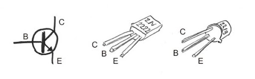
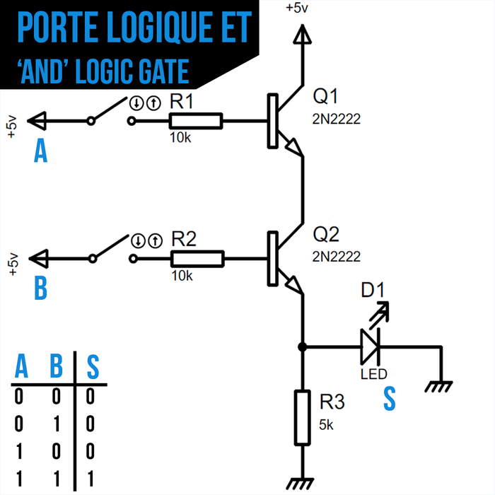
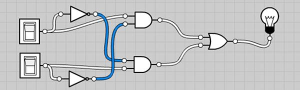
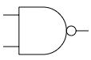

Logique
Histoire
En 1703, Gottfried Wilhelm Leibniz fut le premier occidental à formaliser un système d’opérations à partir de 0 et de 1, le binaire, dans son article ”Explication de l’Arithmétique Binaire”. On retrouve des traces de précédentes tentatives en Chine dans le Yi Jing, le livre des mutations, au 9ème siècle avant notre ère.
Les nombres binaires étaient au centre de la théologie de Leibniz. Il croyait que les nombres binaires étaient symboliques de l’idée chrétienne de creatio ex ni-hilo ou de création à partir de rien. Leibniz essayait de trouver un système qui convertisse les déclarations verbales de la logique en un système purement mathématique.
A partir de 1847, George Boole propose un mode de calcul permettant de traduire des raisonnements logiques par des opérations mathématiques. Il créé ainsi une branche des mathématiques qui définit des opérations dans un ensemble qui ne contient que 2 éléments.
En 1938, Claude Shannon prouve que des circuits électroniques peuvent résoudre tous les problèmes que la logique de Boole peut résoudre.
Avec les travaux d'Alan Turing de 1936, ceci constitue le fondement de ce qui deviendra l’informatique.
Les booléens
Les booléens sont au nombre de 2 : au choix, \(\{ Vrai, Faux\}\) ou \(\{0, 1\}\).
On peut utiliser l’une ou l’autre des représentations, c’est justement le principe de modélisation.
D’ailleurs, en python, ces 2 opérations valent True:
0 == False
1 == True
Les opérateurs logiques
ET
Répond à la question ”Est-ce que les 2 sont vrais ?”
Exemple : Pour qu'une lampe s'allume dans un circuit de sécurité, il faut que l'interrupteur ET la porte soient fermés.
Si l'interrupteur est ON (fermé) ET la porte est fermée, alors la lampe s'allume.
Si l’un des deux (ou les deux) est ouvert, la lampe reste éteinte.
OU (inclusif)
Répond à la question ”Est-ce qu’au moins un des deux est vrai ?”
Pour qu'une alarme se déclenche, il suffit que l’une des conditions suivantes soit vraie : une fenêtre OU une porte est ouverte. Si la fenêtre est ouverte, l’alarme sonne. Si la porte est ouverte, l’alarme sonne. Si les deux sont ouvertes, l’alarme sonne également. Si les deux sont fermées, l’alarme ne sonne pas.
NON
Répond à la question ”Est-ce que c’est Faux ?”
Imaginons une porte avec un voyant lumineux. Si la porte est fermée, le voyant lumineux est éteint. Si la porte est ouverte, le voyant lumineux s’allume. En logique, cela revient à dire : si la porte est NON fermée, alors le voyant est allumé.
OU EXCLUSIF
Répond à la question ”Est-ce que les deux sont différents?”
Deux interrupteur dans une pièce actionnent la même lampe. - S'ils sont dans la même position, alors la lampe sera éteinte. - S'ils sont dans une position différente, alors la lampe sera allumée.
Le mécanisme qui est derrière ce comportement est un ou exclusif.
Tables de vérité
Dans une table de vérité, on énumère toutes les combinaisons possibles de vrais et de faux avec les variables en entrée (ici a et b), puis on répond à la question posée.
Vous pouvez vérifier la table de vérité de vos expressions sur Ce site
Table NON
"NON a" renvoie le "contraire" de a.
Ici, il n'y a que a qui peut simplement prendre les valeurs 0 et 1.
| a | \(\bar{a}\) |
|---|---|
| 0 | 1 |
| 1 | 0 |
Table ET
La table de vérité donne toutes les possibilités de résultats.
\(a.b\) ne répond Vrai que lorsque les deux sont vrais.
Ici, a et b peuvent être dans 4 configurations qu'on sait énumérer.
| \(a\) | \(b\) | \(a.b\) |
|---|---|---|
| 0 | 0 | 0 |
| 0 | 1 | 0 |
| 1 | 0 | 0 |
| 1 | 1 | 1 |
Table OU
| \(a\) | \(b\) | \(a+b\) |
|---|---|---|
| 0 | 0 | 0 |
| 0 | 1 | 1 |
| 1 | 0 | 1 |
| 1 | 1 | 1 |
Table OU EXCLUSIF
\(a\oplus b\) n'est vrai que lorsque les deux sont différents.
| \(a\) | \(b\) | \(a\oplus b\) |
|---|---|---|
| 0 | 0 | 0 |
| 0 | 1 | 1 |
| 1 | 0 | 1 |
| 1 | 1 | 0 |
Tables de vérité d'expressions
Méthode
Lorsqu'on demande d'établir la table de vérité d'une expression booléenne, on commence par écrire toutes les combinaisons possibles de 0 et de 1, puis on décompose l'expression pour trouver progressivement le résultat.
Afin de montrer que deux expressions logiques sont équivalentes, on peut dresser la table de l'une et de l'autre, et conclure selon qu'elles ont la même table de vérité ou non.
Lois de de Morgan
1- Dresser la table de vérité de \(\overline{a+b}\) ainsi que de \(\bar{a}.\bar{b}\)
| \(a\) | \(b\) | \(a+b\) | \(\color{red}\overline{a+b}\) | \(\bar{a}\) | \(\bar{b}\) | \(\color{red}\bar{a}.\bar{b}\) |
|---|---|---|---|---|---|---|
| 0 | 0 | |||||
| 0 | 1 | |||||
| 1 | 0 | |||||
| 1 | 1 |
2- Conclure sur une égalité
3- Montrer que \(\overline{a.b} = \bar{a}+\bar{b}\)
Ces égalités à connaître sont connues sous le nom de lois de de Morgan
ou exclusif
Montrer que \(\bar{x}.y + x.\bar{y} = x \oplus y\)
Propriétés de base
Que valent les expressions suivantes?
- \(1+a\)
- \(1.a\)
- \(0+a\)
- \(0.a\)
- \(a.\bar{a}\)
- \(a+\bar{a}\)
Un peu d'électronique
Le transistor
Le fonctionnement d'un ordinateur réside presque essentiellement sur un composant inventé en 1947 et qui ne cesse de se perfectionner et de se miniaturiser encore aujourd'hui: le transistor.
Il existe des transistors de diverses technologies. Ici je vous présente le PNP.
C'est un composant électronique doté de 3 pattes:
- (C) Le collecteur
- (B) La base
- L'émetteur
Voici son symbole électrique et ce à quoi ça ressemble: 
L'objet n'est pas ici d'être expert en transistors mais de saisir un de ses usages fondamentaux: L'interrupteur commandé.
Si la tension à la base n’est pas suffisamment forte, le courant entre le collecteur et l’émetteur est coupé.
Une opération logique avec des transistors : ET

La LED ne s’allumera que si la tension est suffisante à la base de Q1 et de Q2. Si l’une ou l’autre des bases n’est pas alimentée, le courant est coupé et la LED s’éteint.
Portes et Circuits logiques
Le circuit électtronique précédent se résume entièrement à la porte logique ET suivante, suivie des représentations d'autres portes.

Interrupteurs et lampe
On donne le circuit logique suivant avec les interrupteurs a (en haut) et b (en bas). L'interrupteur est à 1 s'il est fermé.

On note la lampe S. La lampe est à 1 si elle est allumée.
- Exprimez S en fonction de a et de b.
- Etudiez la table de vérité de S
- Proposez une simplification drastique de ce circuit.
Porte NAND
La porte NAND réalise l'opération NON(A ET B), i.e. \(\overline{a.b}\)
- Dressez la table de vérité de la porte NAND
Voici son comment elle est représentée sur un circuit:

Sachant que $\bar{\bar{x}} = x $, à l'aide de la loi de Morgan, exprimez \(a+b\) unqiuement grâces aux opérations ET et NON.
Turing Complete
Ces exercices sont les premiers niveaux d'un jeu nommé "turing complete". Ce jeu, partant de la simple porte NAND, vous emmène jsuqu'à construire un ordinateur entier.
Au début des exercices, seule la porte NAND est utilisable. A chaque fois que vous arrivez à créer une nouvelle porte, elle devient utilisable.
Réalisez chacun de ces exercices les uns sous les autres dans l'interface suivante et sauvegardez votre travail avec le bouton "télécharger le circuit".
- Créer une porte NOT. Seule porte autorisée: NAND
- Créer une porte AND
- Créer une porte OR
- Créer une porte NOR
- Créer une porte XOR
Pourquoi appelle-t-on une porte NAND une porte universelle?
Sauvegardez votre circuit, et réalisez le même exercice, cette fois en partant de la porte NOR. Il faudra peut-être réaliser les portes dans un ordre différent.
Circuit demi-additionneur
Ce circuit prend 2 bits en entrée et les additionne, comme s'il s'agissait d'entiers binaires dont on pose l'addition.
Le circuit prend en entrée deux bits \(a\) et \(b\). Il renvoie la somme \(S\), ainsi que la retenue \(C_{out}\)
Ainsi, on peut directement construire la table de vérité du circuit résultant:
| \(a\) | \(b\) | \(S\) | \(C_{out}\) | Commentaire |
|---|---|---|---|---|
| 0 | 0 | 0 | 0 | 0+0=0 et je retiens 0 |
| 0 | 1 | 1 | 0 | 0+1=1 et je retiens 0 |
| 1 | 0 | 1 | 0 | 1+0=1 et je retiens 0 |
| 1 | 1 | 0 | 1 | 1+1=0 et je retiens 1 |
- En observant la colonne \(s\), on reconnaît la table de vérité de la porte XOR.
- En observant la colonne \(C_{out}\), on reconnaît la table de vérité de la porte AND.
Réalisation du demi-additionneur
Réalisez le circuit demi-additionneur dans l'interface et téléchargez le résultat.
Circuit additionneur complet (Full Adder)
Le circuite additionneur prend en entrée deux bits \(a\) et \(b\) ainsi qu'une retenue \(C_{in}\).
Il émet 2 informations en sortie, la somme obtenue \(S\), ainsi que la retenue \(C_{out}\)
Full-Adder
- Complétez la table de vérité suivante pour l'additionneur complet.
| \(a\) | \(b\) | \(C_{in}\) | \(S\) | \(C_{out}\) | Commentaire |
|---|---|---|---|---|---|
| 0 | 0 | 0 | 0 | 0 | 0+0+0=0 et je retiens 0 |
| 0 | 0 | 1 | |||
| 0 | 1 | 0 | |||
| 0 | 1 | 1 | |||
| 1 | 0 | 0 | |||
| 1 | 0 | 1 | |||
| 1 | 1 | 0 | |||
| 1 | 1 | 1 |
- Montrer que \(S = a \oplus b \oplus C_{in}\)
- Montrer que \(C_{out} = (a \oplus b) . C_{in} + a . b\)
- Réalisez alors le circuit de l'additionneur complet et sauvegardez-le.
Additionneur 4 bits
Un additionneur 4 bits est composé d'un Half-Adder et de 3 Full-Adders en chaîne. Le but est d'additionner le nombre formé par les bits de la première colonne avec le nombre formé par les bits de la deuxième colonne.
Les composants d'affichage en bas vous permettent de visualiser sous forme décimale chaque nombre, et il y en a aussi un pour le résultat.
Réalisez ce circuit et sauvegardez-le